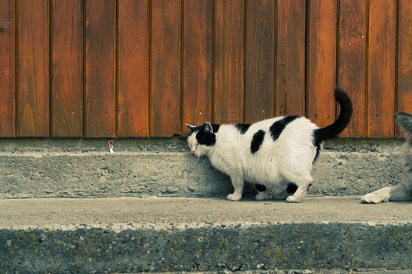

Sobre gatos gordos

Bienvenido a nuestro rincón dedicado a los gatos. Aquí compartimos fotos, videos y momentos divertidos de nuestros amigos felinos.
Cada gato tiene su propia personalidad. Algunos disfrutan explorar y jugar con cajas; otros prefieren descansar junto a una ventana o acompañarnos mientras hacemos nuestras tareas.
El nombre de nuestra página es una forma cariñosa de presentarlos. Queremos celebrar su compañía y recordar que merecen atención, juegos y mucho amor.